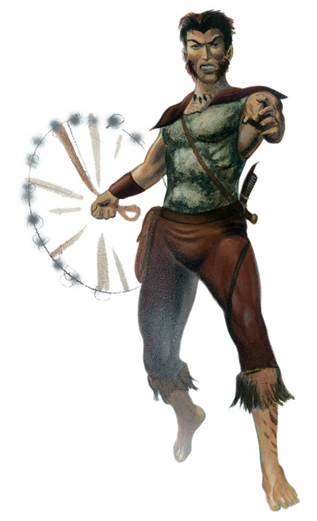

半身人投石狙击手是擅于使用与自己族人关系密切的武器－战用投石索－的专家。这些高手在半身人社群中广为人知（通常也饱受尊敬）。然而，这些神准的狙击手在 自己的族群之外却几乎有着「那些该死的投石刺客！」或是其它各式各样的浑号。的确，有些投石狙击手将自己的才能卖给哪些希望敌人消失的雇主，但其它人大多 不会成为专业的刺客，反倒是使用这些技巧保护自己的社群或者出外冒险。此外，也有一些投石狙击手选择将自己大半的生涯贡献给社群，留在社群内将这些技巧传 授给年轻的下一辈。
战士、武僧、以及盗贼都非常适合成为投石狙击手。有些野蛮人与游侠－特别是那些喜好使用游击战术或用拖延战术保卫家园 的人－则认为投石狙击手的技巧对他们的工作非常有帮助。偶尔也会有牧师或德鲁依认为学习这些技巧对自己的信念宇事业有所帮助，因此踏上这条道路。法师就很 少愿意放弃获得更多法术的机会去全心全意地学习这种技巧；而术士成为投石狙击手的机率只比法师略高一些而已。
在半身人社群内通常会代代相 传使用战用投石索的技巧（尤其是轻足半身人）－这或许能解释何以轻足半身人社群内投石狙击手的比例高过另两个亚种（鬼智与强心）的现象。虽然后两个亚种的 社群内也曾出现投石狙击手，但一般来说他们较偏好使用其它种类的远程武器。有些投石狙击手会在某些情形在合作执行任务（比如说伏击那些威胁当地半身人社群 生存安全的敌人）；此外，也有一些四处迁徙游荡的轻足半身人社群以族内拥有投石狙击手战斗小队为傲。
生命骰：d6
职业条件：
种族：半身人 Halfing
基础攻击加值：+5
技能：手艺（制造武器）3级 Craft（Weaponsmith），躲藏4级 Hide，侦查6级 Spot
专 长：擅长奇特武器（半身人战用投石索） Exotic Weapon Proficiency（halfing warsling），擅长奇特武器（跃石弹） Exotic Weapon Proficiency（skiprock），近程射击 Point Blank Shot，精准射击 Precise Shot
--
附注：奇特远程武器
跃石弹 skiprock
种类：微型 价格：3gp 伤害：1d3 致命一击：x2 射程：10 重量：1/4磅 伤害类型：敲击
描 述：半身人非常珍视这种经过仔细打磨、重量完美的小石弹，因为只要在擅长使用此武器的人手上，他就可以一次可以攻击两个目标）。使用者可以借着操纵力道的 强弱与方向，让跃石弹击中目标之后，再弹向另一个原目标附近（5罩内）由投掷者选定的目标。攻击第二目标时，投掷者亦须进行攻击命中检定，该次检定仍使 用前次攻击的所有加值，不过检定结果会有-2处罚。跃石弹也可以作为一般投石索的弹药，但此时将失去弹跃攻击的特性－除非使用半身人战用投石索发射，且射 击者同时擅长使用这两种武器。
半身人战用投石索 halfing warsling
种类：小型 价格：25gp 伤害：1d6 致命一击：x4 射程：50 重量：1磅 伤害类型：敲击
描 述：这种投石索与一般投石索的区别，在于前者有更完美的平衡与结实的结构。列表中的伤害值是指以跃石弹作为射击弹药的情况；如果装填一般的弹丸 （bullet）就只能造成1d4伤害。如果使用者同时擅长使用半身人战用投石索与跃石弹种两武器，并用前者发射后者时，跃石弹就可以像被人手投掷那样进 行弹跃攻击。
--
职业技能：
以力量为职业属性者：攀爬 Climb
以敏捷为职业属性者：躲藏 Hide，无声移动 Move Silently
以智力为职业属性者：手艺 Craft
以智能为职业属性者：聆听 Listen，专业 Profession，察颜观色 Sense Motive，侦查 Spot
每级技能点数：2+智力调整值
职业特性：
擅长武器与防具 Weapon & Armor Proficiency：
投石狙击手不擅长使用任何武器或防具。
战用投石索偷袭 Warsling Sneak Attack [特异能力]：
第1 级起，投石狙击手可以趁敌人无法有效防御时攻击其弱点，造成额外伤害。基本上，只要目标失去防御等级的敏捷加值（无论其原本是否有此加值），投石狙击手 「使用战用投石索」的远程攻击就可以造成额外1d6伤害。第3与第5级时都「再」加1d6。远程偷袭造成的额外伤害不计入致命一击的倍数。由于必须精确地 瞄准才能命中要害，因此被远程偷袭的目标必须位于30漳冢才会造成额外伤害。除了上述不同之外，此能力与盗贼的偷袭能力相同。
狙击手之眼 Sniper’s Vision [特异能力]：
第2 级起，当投石狙击手攻击拥有掩蔽（cover）防御加值的敌人时，其攻击检定都有+2奖励；由于投石狙击手擅于瞄准敌人身体没有掩蔽的部分，因此可以抵销 敌人掩蔽方面的优势。此外，如果投石狙击手攻击敌人时因目标享有隐蔽（concealment）优势而失手，他可以重新掷骰一次以判断是否真的失手。
精通致命一击 Improved Critical [特异能力]：
第4级时，投石狙击手将得到奖励专长－精通致命一击（半身人战用投石索）。
进阶弹跳射击 Improved Ricochet [特异能力]：
第6级起，投石狙击手将能更加神乎其技地运使战用投石索，因此每当他发射的跃石弹反弹攻击第二目标时，可以抵销原本的-2命中处罚。此能力每轮可以使用一次。
附表：半身人投石狙击手
等级 基本攻击加值 强韧M反射M意志豁免加值 职业特性
1 +1 +0M+2M+0 战用投石索偷袭+1d6
2 +2 +0M+3M+0 狙击手之眼
3 +3 +1M+3M+1 战用投石索偷袭+2d6
4 +4 +1M+4M+1 精通致命一击
5 +5 +1M+4M+1 战用投石索偷袭+3d6
6 +6 +2M+5M+2 进阶弹跳射击
--
资料来源：费伦大陆种族志《Races of Faerun》
译者：一凡